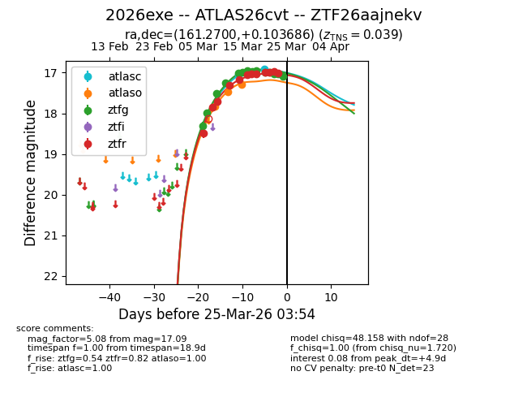
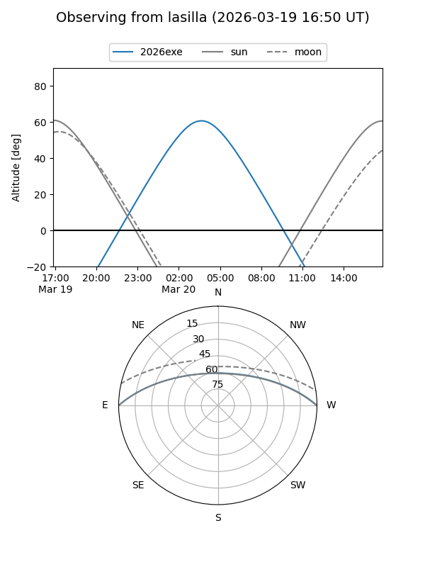
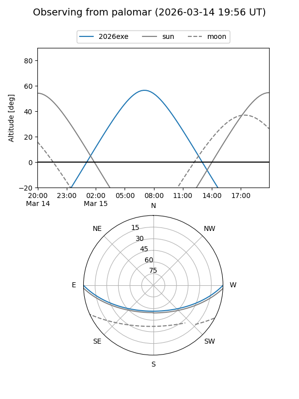
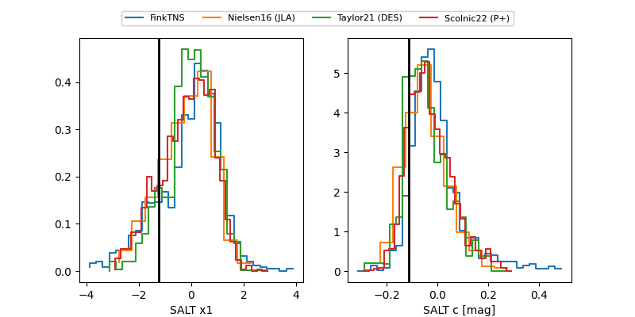

2026exe
Target 2026exe at 2026-03-25 03:57
Aliases and brokers:
FINK: link
Lasair: link
ALeRCE: link
TNS: link
YSE: link
alt names
ZTF26aajnekv (ztf,fink_ztf)
2026exe (tns,yse)
ATLAS26cvt (atlas)
Coordinates:
equatorial (ra, dec) = 161.2700,+0.10369
equatorial (HMS+DMS) = 10:45:04.79,+00:06:13.27
galactic (l, b) = (249.3748,+49.37049)
Flags:
confirmed ia
Photometry:
last atlasc=16.91, atlaso=17.29, ztfg=17.09, ztfr=17.02
2 atlasc, 3 atlaso, 14 ztfg, 12 ztfr detections
Lightcurve

Visibility


Additional plots
